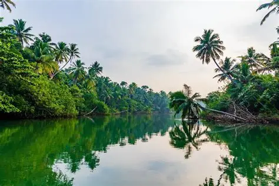
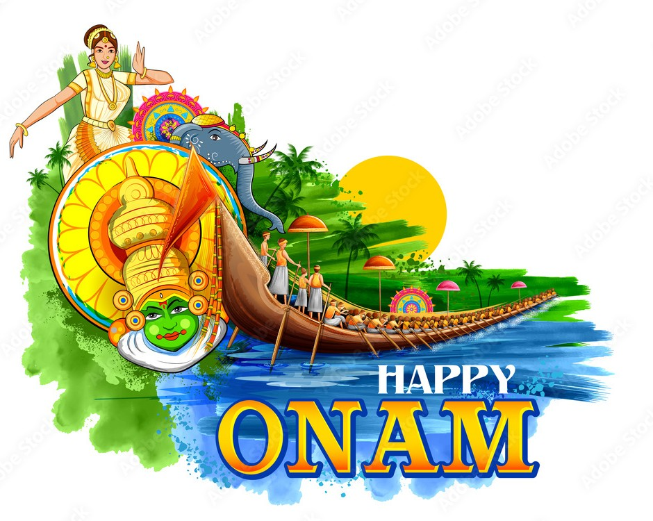
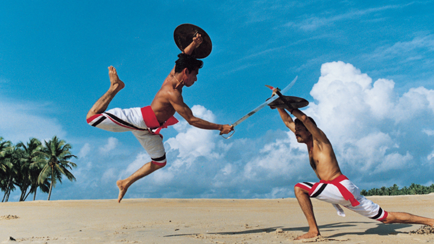

Kathakali
Kathakali is a famous classical dance-drama of Kerala, known for its elaborate costumes, colorful makeup, and expressive gestures. It tells stories from Indian epics like the Ramayana and Mahabharata.
Performers undergo years of training to master facial expressions and hand movements. The dramatic storytelling and traditional music make Kathakali one of the most unique art forms in India.

Kerala Backwaters
The backwaters of Kerala are a network of lagoons, canals, and lakes that run parallel to the Arabian Sea coast. Houseboat cruises are a major attraction for visitors.
Surrounded by coconut trees and peaceful villages, the backwaters reflect Kerala’s natural beauty and play an important role in local transportation and tourism.

Onam Festival
Onam is the most important festival of Kerala, celebrated with traditional dances, boat races, and grand feasts. It marks the homecoming of the legendary King Mahabali.
People decorate their homes with colorful flower rangolis called Pookalam, wear traditional attire, and enjoy the Onam Sadhya, a delicious multi-course vegetarian meal served on banana leaves.

Kalaripayattu
Kalaripayattu is one of the oldest martial arts in the world, originating in Kerala thousands of years ago. It combines physical training, weapon practice, and meditation.
The art form focuses on discipline, flexibility, and strength, and it has influenced many modern martial arts styles. It remains an important part of Kerala’s traditional heritage.